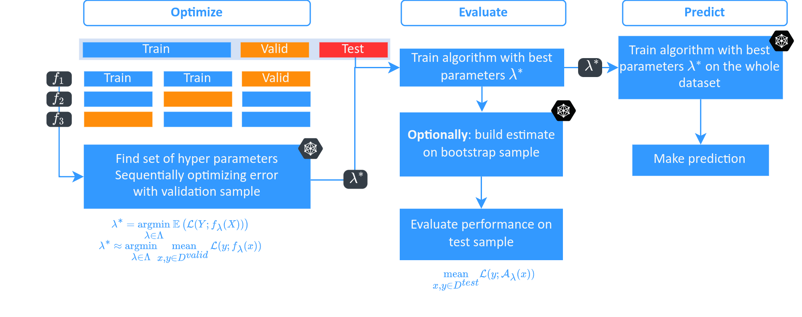

Palma Library¶
The Palma library aims at providing tools for an automatic machine learning approach. While many tools exist for individual components of AutoML, this library focuses on providing a structured framework rather than implementing a complete service.
In this library, a broad definition of AutoML is used, covering the optimization of hyperparameters, model historization, performance analysis, and any other element that can be replicated and must be included in the analysis results of the models.
Thanks to the use of components, this library is designed to be modular, allowing users to add their own analyses. It includes the following elements:
A vanilla approach described below (in the Basic Usage section) and in the notebooks [classification](examples/classification.ipynb) and [regression](examples/regression.ipynb).
A collection of Components that can be added to enrich the analysis.
Installation¶
To install the Palma library, use the following command:
python -m pip install palma
Basic Usage¶
Start your project by using the project class:
import pandas as pd
from sklearn import model_selection
from sklearn.datasets import make_classification
from palma import Project
X, y = make_classification(n_informative=2, n_features=100)
X, y = pd.DataFrame(X), pd.Series(y).astype(bool)
project = Project(problem="classification", project_name="default")
project.start(
X, y,
splitter=model_selection.ShuffleSplit(n_splits=10, random_state=42),
)
The instantiation defines the type of problem, and the start method will set up what is needed to carry out an ML project, including a testing strategy (argument splitter), training data X, and target y.
Run Hyper-optimization¶
{kind=link}
The hyper-optimization process will look for the best model in a pool of models that tend to perform well on various problems. For this specific task, the FLAML module is used. After hyperparameterization, the metric to track can be computed:
from palma import ModelSelector
ms = ModelSelector(engine="FlamlOptimizer",
engine_parameters=dict(time_budget=30))
ms.start(project)
print(ms.best_model_)
Tailoring and Analyzing Your Estimator¶
from palma import ModelEvaluation
from sklearn.ensemble import RandomForestClassifier
# Use your own estimator
model = ModelEvaluation(estimator=RandomForestClassifier())
model.fit(project)
# Get the optimized estimator
model = ModelEvaluation(estimator=ms.best_model_)
model.fit(project)
Manage Components¶
You can add components to enrich the project. See Components for detailed documentation.
Authors¶
Eurobios Mews Labs